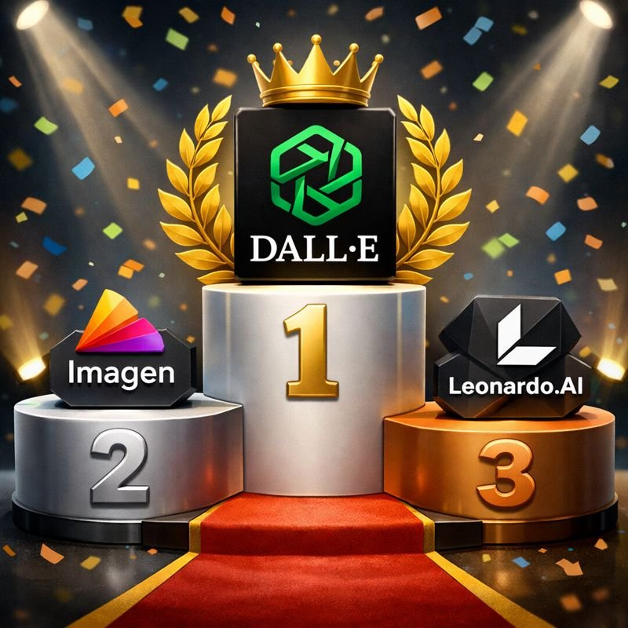

Claude's Take: Top 3 Free AI Image Generation Tools (Since Claude Can't Do It Itself)
January 30, 2026
While Claude from Anthropic excels at conversation, coding, and analysis, one thing it can't do is generate images directly. So we asked Claude for its top recommendations on free AI image generation tools from different companies. Here's what it suggested:
The top three free AI image generation tools ranked by Claude
1. DALL-E via Bing Image Creator (Microsoft/OpenAI)
Microsoft offers free access to OpenAI's DALL-E through Bing Image Creator. Users get a limited number of "boosts" for faster generation, with slower free generation available afterward. The interface is user-friendly and produces high-quality results, making it ideal for beginners.
2. ImageFX (Google)
Google's entry into the AI image generation space, ImageFX, provides free access to their Imagen model. With a clean interface and Google account integration, it offers high-quality image generation with straightforward controls.
3. Leonardo.AI (Independent)
As an independent player in the space, Leonardo.AI offers 150 free daily tokens upon sign-up. It stands out by providing granular control over generation parameters and access to multiple AI models, appealing to users who want more customization.
The Bottom Line
While Claude can't generate images itself, it can write detailed prompts for these tools, create SVG graphics through code, or help with programmatic image generation using libraries like Python's Pillow. For AI art and photorealistic images, though, these three free tools are Claude's top picks.